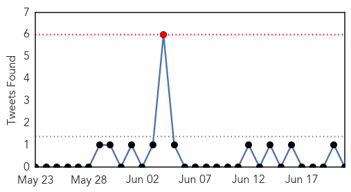

Ebola
30-Day Web Trend
11 alerts, 4 warnings

30-Day Twitter Trend
2 alerts, 0 warnings

Article Locations

Article Confidences

Top Articles:
- 1.000
- Prayers, precautions in W Africa amid Ebola threat
- 1.000
- Doctors Without Borders: Ebola 'out of control'
- 1.000
- Liberian official: 7 more deaths linked to Ebola
- 1.000
- Doctors Without Borders: Ebola 'out of control'
- 1.000
- The Voice of Russia: News, Breaking news, Politics, Economics, Business, Russia, International current events, Expert opinion, podcasts, Video
- 1.000
- Sudan Vision Daily
- 1.000
- Ebola spread due to 'relaxation' of efforts
- 0.999
- An "Out Of Control" Epidemic Is Ravaging Western Africa
- 0.999
- Ebola in the United States
- 0.998
- Ebola Outbreak In West Africa Is 'Totally Out Of Control,' With Volunteers And Supplies Running Low
- 0.998
- KSWO, Lawton, OK- Wichita Falls, TX: News, Weather, Sports. ABC, 24/7, Telemundo -
- 0.998
- Ebola ‘out of control’ in West Africa
- 0.996
- Ebola Out Of Control In West Africa
- 0.996
- Doctors Without Borders
- 0.996
- Doctors Without Borders: The Ebola Outbreak In West Africa Is 'Totally Out Of Control'
- 0.993
- West Africa devastated by Ebola virus
- 0.742
- US now says 84 lab workers were potentially exposed to anthrax
- 0.648
- CDC says more lab workers may have been exposed to anthrax
- 0.594
- CDC Workers Exposed To Anthrax
- 0.554
- Information Minister denounces the ‘SEA’ « Awoko Newspaper
Top Tweets:
-
No tweets found for Jun 21, 2014
Unknown
30-Day Web Trend
0 alerts, 0 warnings
30-Day Twitter Trend
0 alerts, 0 warnings

Article Locations
Article Confidences

Top Articles:
- 0.969
- Vaccine's availability in Oklahoma gives piglets fighting chance against lethal virus
- 0.937
- 86 Potential Anthrax Exposures Identified as Count Continues to Go Up
- 0.934
- Morocco advises against hajj due to MERS
- 0.927
- CDC Monitors 75 Atlanta Workers after Anthrax Virus Exposure
- 0.917
- Chicago Tribune
- 0.917
- Chicago Tribune
- 0.917
- Chicago Tribune
- 0.917
- Chicago Tribune
- 0.910
- The world windows to Thailand
- 0.866
- 13 killed in attack on police station in China's Xinjiang
- 0.866
- Obama, Hollande call on Russia to de-escalate Ukraine tensions
- 0.866
- Ukraine announce week-long ceasefire in fight against separatists
- 0.852
- Vermont Department of Health achieves National Public Health Accreditation
- 0.843
- Up To 84 Workers Possibly Exposed, CDC Says
- 0.751
- Deadly "Pig Virus" Has Arkansas Hog Farmers Worried -
- 0.726
- Arkansas Hog Farmers Worried About Deadly "Pig Virus" -
- 0.690
- Baptist Health will spend more than $1 million for staff, patients garments designed to minimize infection risk
- 0.650
- CDC scientists exposed to anthrax. Here's what happened
- 0.640
- It's a dog's life for Sierra Leone vet
- 0.637
- Centre to launch encephalitis immunization campaign on Sunday
- 0.635
- Encephalitis menace: Health Minister Harsh Vardhan promises all possible help
- 0.626
- More US lab workers in anthrax scare
- 0.623
- International Medical Corps Responds To Displacement Crisis in Iraq - Iraq
- 0.608
- HealthFair Cardiovascular Screening Packages Are Unethical, Mislead Consumers, Do More Harm Than Good
- 0.584
- Detection of imported wild poliovirus in environmental samples - Brazil
- 0.528
- CDC Says More Workers Potentially Exposed To Live Anthrax
- 0.525
- Centre to launch encephalitis immunization campaign
- 0.522
- Hendra virus-infected horse dies in Murwillumbah, five people being monitored
Top Tweets:
-
No tweets found for Jun 21, 2014